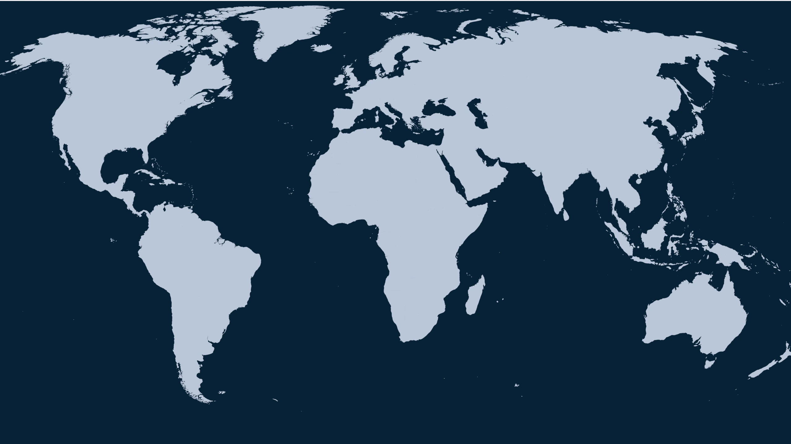
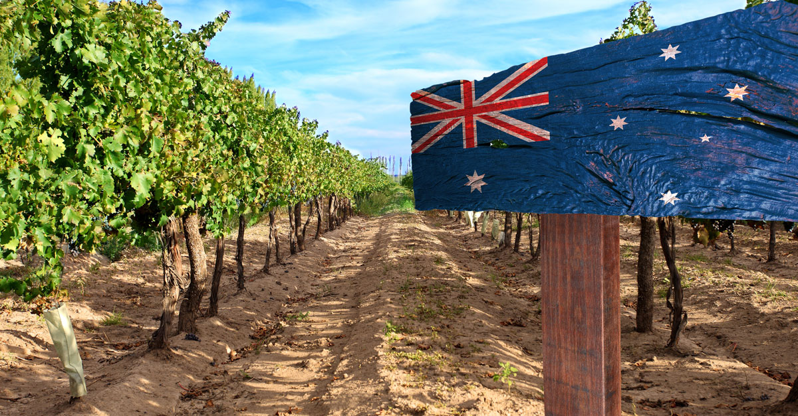

This is COVID-19 vaccination scheduler that utilizes Python, SQL, and Microsoft Azure. It allows patients to reserve appointments and caregivers to track vaccine availability. This project also uses salting and hashing to store and secure the users' passwords.

This is a Tableau dashboard that tracks the Global COVID-19 vaccination data. It allows us to see the percentage of unvaccinated, partially vaccinated, and fully vacinated people across the world.
This is a Tableau dashboard that helps users keep track of locations where collisions in Seattle often happen. It also assesses different factors that affects these colisions, such as weather conditions, alchohol influence, date and time.

This is a Tableau dashboard that gives users Australian wine sales analysis. It allows us to see how different types of Australian wine perform in terms of its revenue and profit.

This is a PowerBI dashboard that shows the performance of individual district managers in a particular startup.